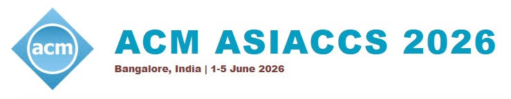

“To Pay or Not to Pay?”: Understanding User Decision-Making and Influence of Nudges in UPI Apps
Nandini Bajaj*, Shiladitya De*, Kshitiz Sharma, Xinru Page,
Bart Knijnenburg, Mainack Mondal
In ACM Asia Conference on Computer and Communications Security (ASIA CCS 2026).